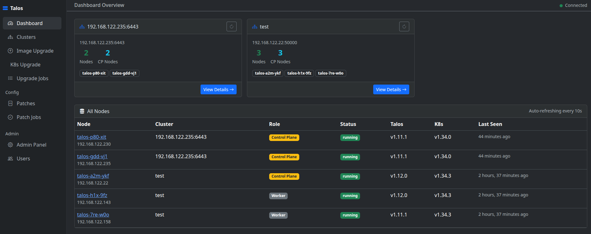
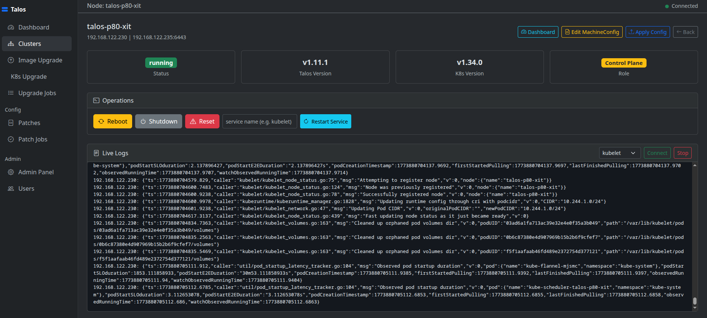
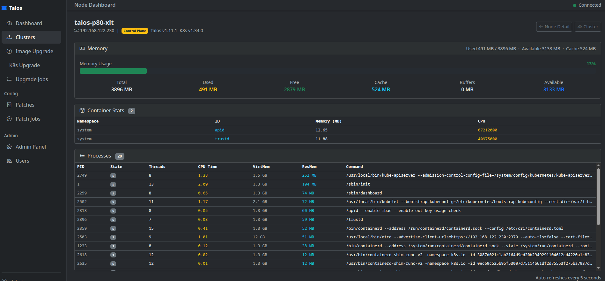
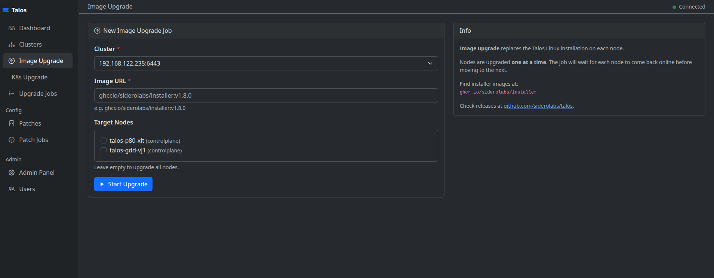
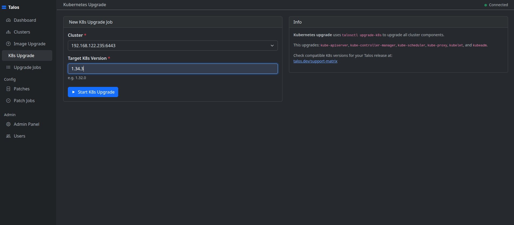
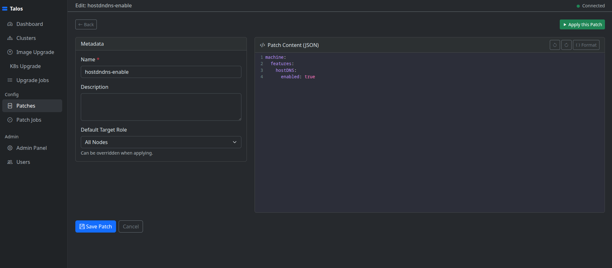
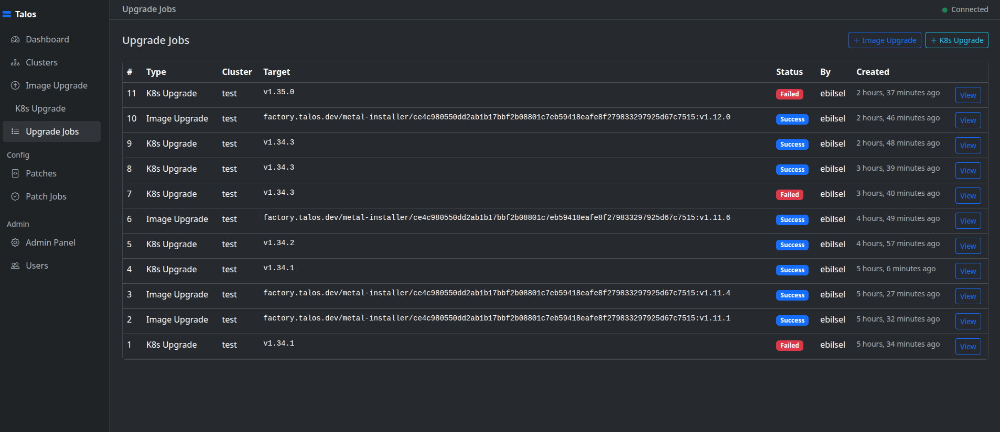

A web-based management interface for Talos Linux clusters. Node operations, machine config editing, upgrades, and patch workflows — with real-time output streamed directly to your browser.
Add, edit, and delete clusters. Download talosconfig and kubeconfig directly from the UI.
Reboot, shutdown, reset, restart services, and stream live node logs via WebSocket.
View and edit full YAML machine configurations in the browser. Apply with selectable modes (auto, reboot, staged, try).
Save JSON RFC 6902 or YAML merge patches and apply them to all nodes, control planes, or workers.
Trigger Talos OS image or Kubernetes control plane upgrades with real-time streaming output per node.
3-step wizard: generate configs, edit YAML in browser, apply to nodes and bootstrap etcd automatically.
Real-time cluster event stream and per-node service logs over WebSocket on the cluster detail page.
Admin, operator, and viewer roles. Optional LDAP and Keycloak/OIDC SSO via environment variables.
Docker and Docker Compose are the only requirements. talosctl must be installed and available in your PATH.
git clone https://github.com/Turksat/talos-ui.git
cd talos-uisudo docker compose build --build-arg TALOS_VERSION=v1.13.0docker compose upOpens three services: redis, django (Daphne ASGI on port 8000), and celery worker.
http://localhost:8000Default credentials: admin / admin
SECRET_KEY in a .env file at the project root.
Cluster list with node counts, status summary, and quick-access actions.

Node list with live status, operation controls, version info, and real-time log streaming.

Per-node CPU, memory, disk metrics and running process list.

Upgrade Talos OS image on selected nodes with real-time streaming console output.

Upgrade the Kubernetes control plane with live log output in the browser.

Apply JSON or YAML patches to all nodes, control planes, or workers with live console output per job.

History of all upgrade jobs with status, timestamps, and full console log replay.

Talos Dashboard was built out of a real operational need at Türksat. Managing Talos Linux clusters through the command line is powerful but repetitive — every reboot, config apply, or upgrade cycle meant juggling talosctl flags, YAML files, and multiple terminal windows. The goal was to bring all of that into a single, browser-based interface without giving up transparency or control.
All talosctl calls use subprocess with shell=False throughout. Talosconfig files are written to a temporary path with mode 0o600 and deleted immediately after each operation. Role-based access (admin / operator / viewer) is enforced at the view layer so teams can share the dashboard without sharing full cluster credentials.
Real-time feedback was a first-class concern from the start. Upgrade and patch operations stream output line-by-line to the browser over WebSocket using Django Channels and Celery, so you never have to tail a log file to know what is happening on a node.
Contributions, bug reports, and feature requests are welcome via GitHub Issues.